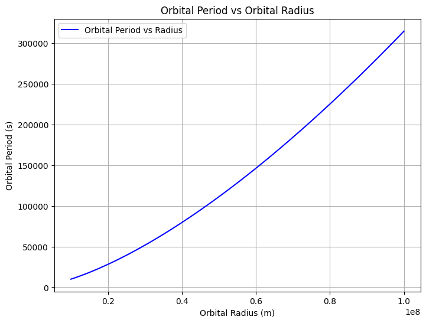

Problem 1
Derivation of Kepler's Third Law
Horizontal Motion
Since velocity is the derivative of position:
Integrating again:
Vertical Motion
Integrating the vertical acceleration equation:
The velocity in the vertical direction is:
Since velocity is the derivative of position:
Astronomical Implications
Planetary Masses
Kepler's Third Law can be used to calculate the mass of a planet or a star if we know the orbital period and the orbital radius of a satellite or planet in orbit. Rearranging the derived equation:
We can solve for the mass \( M \):
This formula allows us to calculate the mass of the central object (like a planet or a star) using the orbital period \( T \) and the orbital radius \( r \) of an orbiting body. For example, if we know the orbital characteristics of a satellite or moon, we can determine the mass of the planet or star it orbits.
Orbital Distances
Kepler's Third Law also helps us calculate the orbital distance (semi
Real-World Analysis
Moon's Orbit Around Earth
Kepler's Third Law allows us to analyze the Moon's orbit around Earth by using the known orbital period and orbital radius. The Moon’s orbital period is approximately 27.32 days, and the average distance from Earth is about 384,400 km.
To calculate the mass of Earth using Kepler's Third Law, we can rearrange the formula:
Where: - \( r = 384,400 \, \text{km} \) (orbital radius), - \( T = 27.32 \, \text{days} \) (orbital period, which we convert to seconds for consistency).
Using the known gravitational constant \( G \), we can solve for the mass of Earth. This illustrates how Kepler's Third Law can be used to determine the mass of a planet or moon based on orbital parameters.
Orbits of Planets in the Solar System
Kepler’s Third Law is crucial in understanding the motion of planets in the Solar System. By analyzing the orbital periods and radii of planets, we can infer various important properties.
For example, the orbital period of Earth is 1 year, and its average orbital radius (semi-major axis) is 1 Astronomical Unit (AU) or 149.6 million km. If we apply Kepler's Third Law, we can calculate the mass of the Sun.
For a planet like Jupiter, which has an orbital period of about 11.86 years and an average orbital radius of 5.2 AU, we can use Kepler's Third Law to verify its motion relative to the Sun. By comparing the orbital parameters of all planets, we see that the farther a planet is from the Sun, the longer its orbital period, which is consistent with the relationship \( T^2 \propto r^3 \).
Codes Of Tables
import pandas as pd
Table 1: Orbital Period and Radius (Sample Data)
data1 = { "Planet": ["Earth", "Mars", "Jupiter", "Saturn"], "Orbital Period (years)": [1, 1.88, 11.86, 29.46], "Orbital Radius (AU)": [1, 1.524, 5.203, 9.537] } table1 = pd.DataFrame(data1) print("Table 1: Orbital Period and Radius") print(table1)
print("\n")
Table 2: Orbital Characteristics of Moons (Sample Data)
data2 = { "Moon": ["Moon", "Phobos", "Europa", "Titan"], "Orbital Period (days)": [27.32, 0.32, 3.55, 15.95], "Orbital Radius (km)": [384400, 9377, 671100, 1221870] } table2 = pd.DataFrame(data2) print("Table 2: Orbital Characteristics of Moons") print(table2)
Tables
Table 1: Orbital Period and Radius Planet Orbital Period (years) Orbital Radius (AU) 0 Earth 1.00 1.000 1 Mars 1.88 1.524 2 Jupiter 11.86 5.203 3 Saturn 29.46 9.537
Table 2: Orbital Characteristics of Moons Moon Orbital Period (days) Orbital Radius (km) 0 Moon 27.32 384400 1 Phobos 0.32 9377 2 Europa 3.55 671100 3 Titan 15.95 1221870 